Chapter 6 · Thesis pp. 200-255
Results
Everything below is model-conditional unless the tier label says otherwise. The numbers come from the reproducible archive; every figure links to its source data.
The measured wave Tier 1
| Quantity | Value | Reading |
|---|---|---|
| Usable questionnaires | 52 of 60 | 8 duplicate vectors removed |
| Perceived benefit | 5.12 (SD 0.87) | 7-point scale |
| PB - star correlation | ρ = .67 | Descriptive association |
| BRS reliability | α = .957 | Internal consistency |
| PB reliability | α = .947 | ω = .962 |
| Single-factor CFA | Poor fit | No structural validity claimed |
Headline contrast Tier 2
The epistemic-first configuration G1 against the engagement-first status quo G0, 500 personas, 18 sessions, GRM-IRT scoring.
| Outcome | Estimate | 95% interval | t(499) | d |
|---|---|---|---|---|
| Evaluative rating | +0.827 | [0.779, 0.875] | 33.93 | 1.52 |
| Competence rating | +11.30 | [10.64, 11.95] | 33.74 | 1.51 |
| Engagement | −0.183 | [−0.188, −0.178] | −74.41 | −3.33 |
Full-factorial decomposition
| Effect | Value | Interpretation |
|---|---|---|
| A (BRS) | +0.1905 | Smaller main effect |
| B (diversity/cooling) | +0.6265 | The dominant path |
| C (ERIC moderation) | −0.0121 | Near zero alone |
| B x C | +0.3791 | Nearly half the total contrast |
| A x B, A x C, A x B x C | +0.0216, −0.0084, +0.0886 | Small |
The 256-point joint sweep
Varying six mechanism parameters and five state-outcome weights, including zero: median +0.567 (IQR [0.383, 0.802]), mean +0.593, range −0.244 to +1.810, 96.5% of draws positive. The top partial rank correlations: diversity-to-credibility +0.77, BRS-to-credibility +0.31, echo-to-credibility −0.27.
Randomized-assignment triangulation
| Design | Worlds | Delta SR eval | Delta engagement |
|---|---|---|---|
| Within-persona | 1 | +0.827 | −0.217 |
| Agent-randomized | 40 | +0.630 [0.384, 0.851] | −0.232 |
| Design-based | 400 | +0.807 [0.470, 1.109] | −0.217 |
| Cluster-randomized | 20 | +0.659 [0.338, 0.948] | −0.226 |
The B main effect stays near +0.63 everywhere. The A main effect collapses from +0.190 to +0.038 [−0.075, 0.131] between agents and recovers to +0.182 [0.011, 0.336] in the interference-free design: BRS diffusion is the interference-sensitive component. Placebo D gives −0.003; mechanism checks pass (B raises chosen diversity +1.299, A raises BRS +0.019, B x C lowers echo −0.340).
The qualitative gate Not met
| Coding pass | Micro-F1 | Outcome |
|---|---|---|
| Human gold (3 coders) | reference | Pairwise kappa .762 / .852 / .861 |
| Qwen 7B zero-shot | .193 | 0 of 25 usable; 32.0% quotes fabricated |
| Qwen 7B gold 5-fold | .320 | 0 of 25 usable; 16.1% fabricated |
| Claude first pass | .452 | 2 of 25 usable; no mechanism code |
The pre-set rule (8 positives, kappa at least .60, at most 5% fabrication) was met by no mechanism code, so E1 to E3 were not eligible; E1 and E2 are reported as exploratory checks and E3 was not run. The qualitative layer remains an assumption audit.
Gemini persona-agent pilot
Direction reproduced, magnitude not: +2.650 [2.342, 2.967] versus +0.827; engagement reversed at +0.163 versus −0.183. A single-shot appraisal has no 18-session state updates, so it has no mechanism for the engagement cost.
Figures
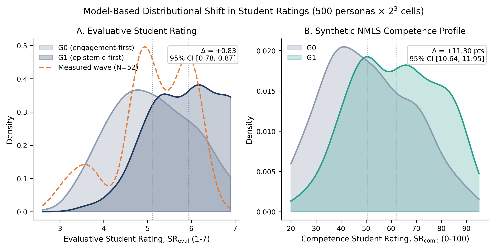
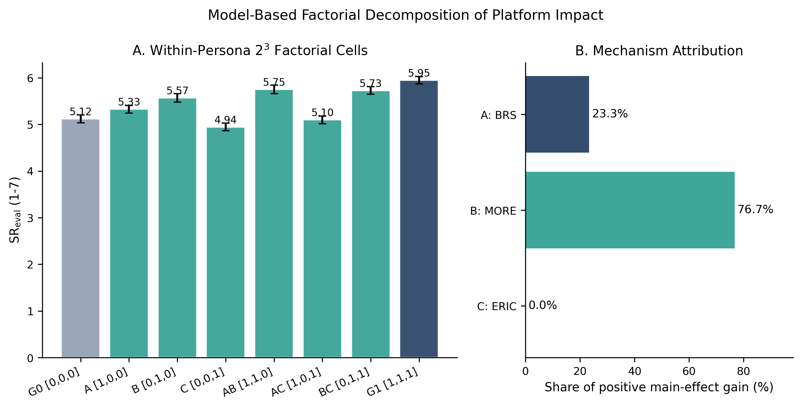
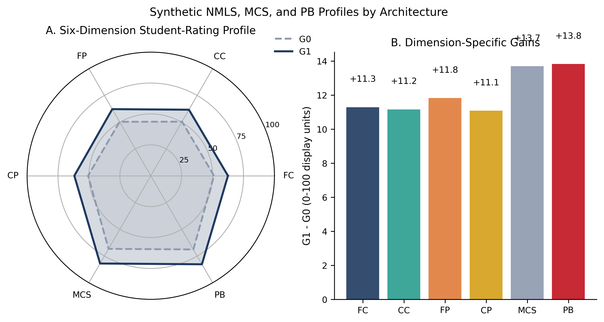
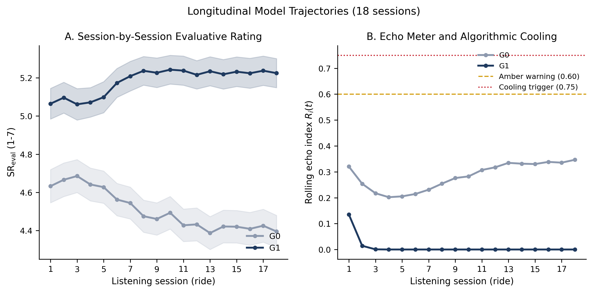
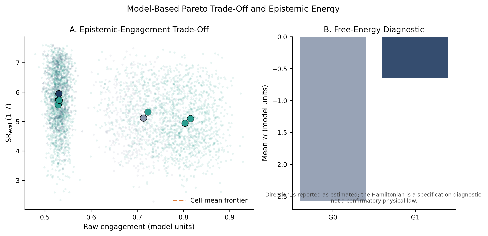
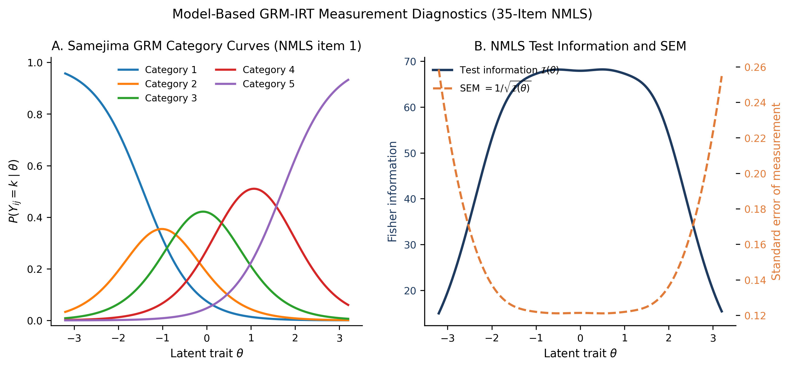
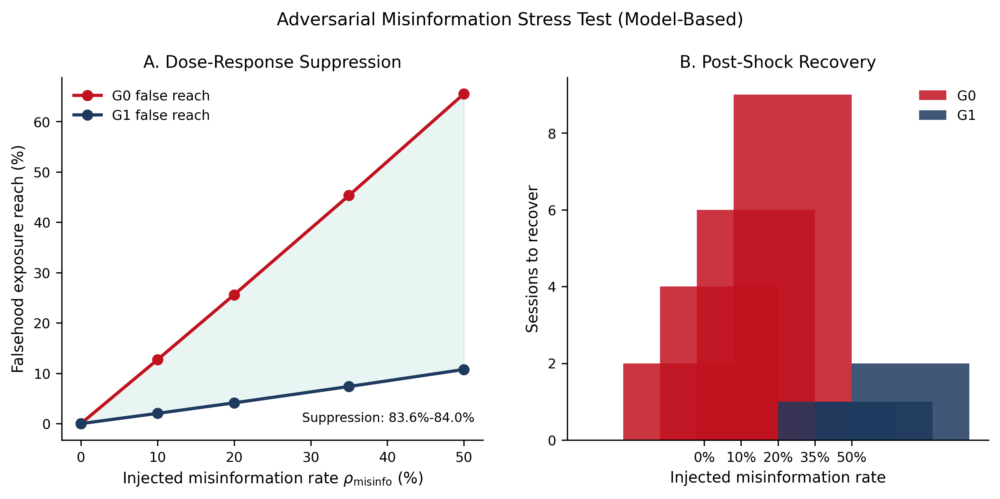
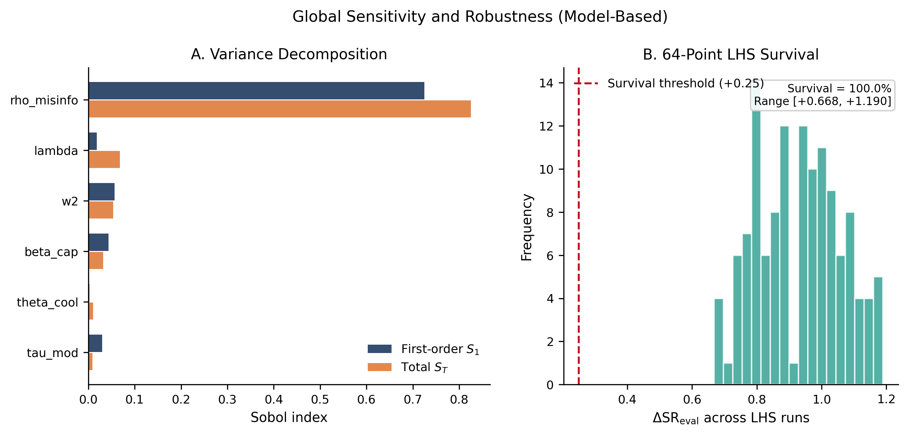
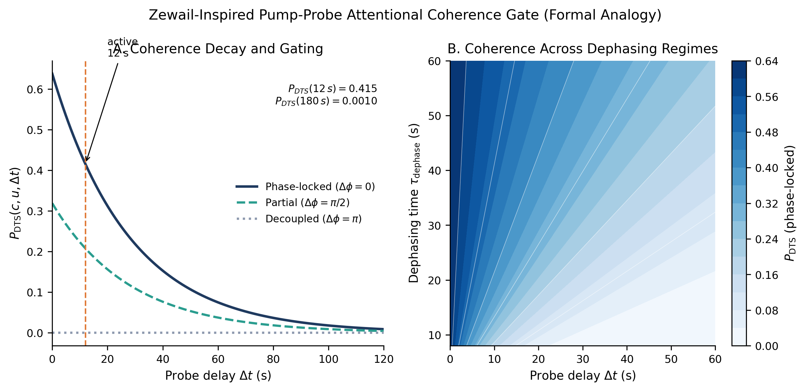
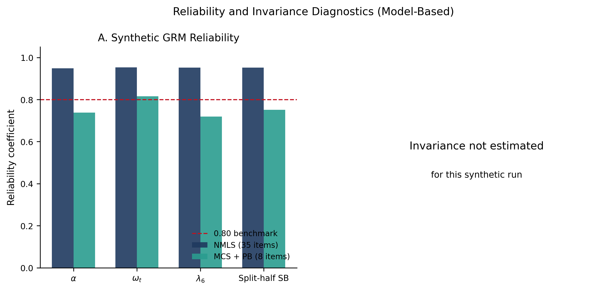
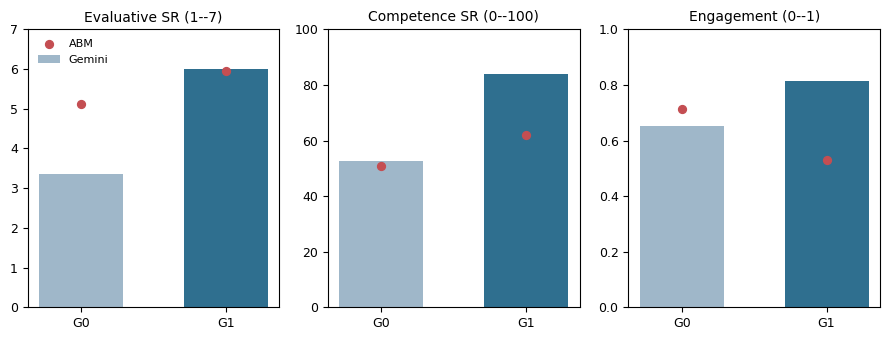
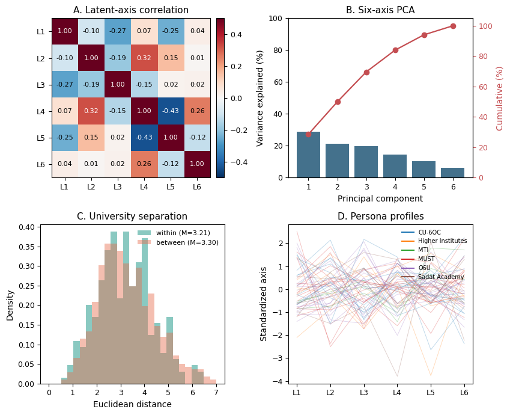